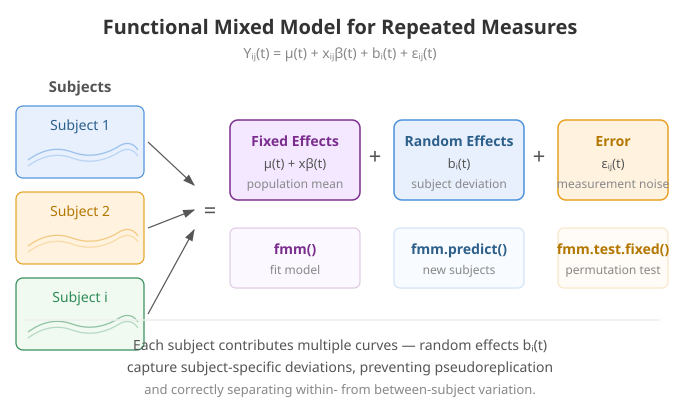
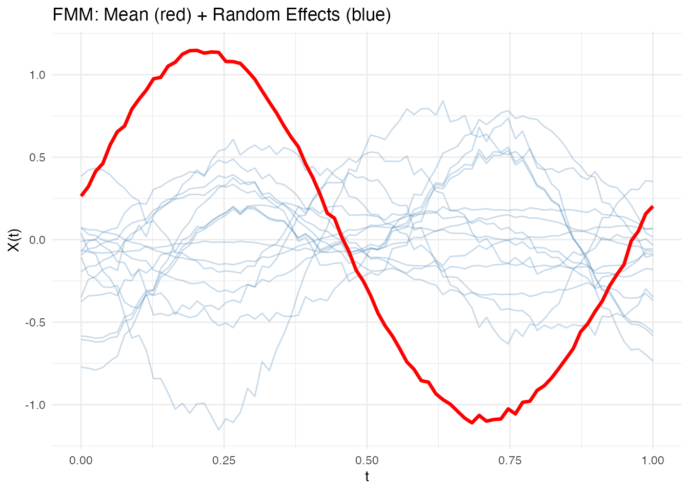
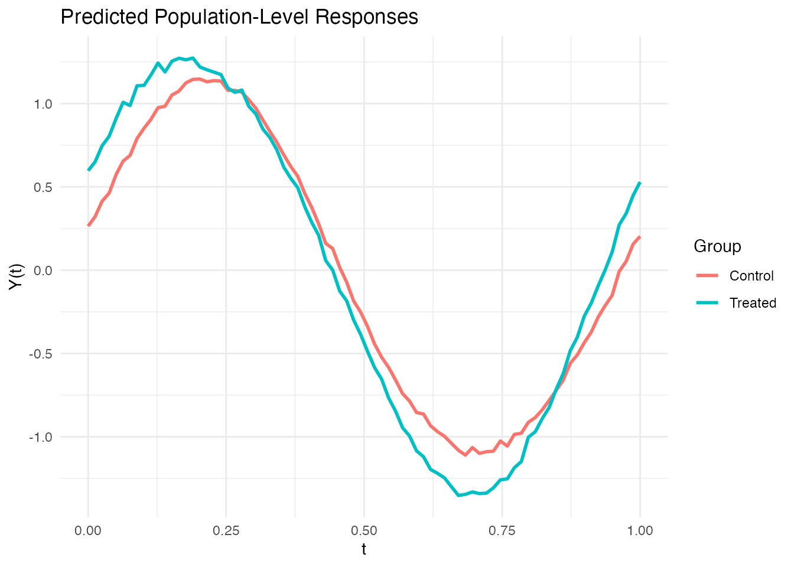

Functional Mixed Models for Repeated Measures
Source:vignettes/articles/functional-mixed-models.Rmd
functional-mixed-models.RmdIntroduction
In many studies, each subject is observed multiple times, producing repeated functional measurements. A functional mixed model (FMM) decomposes the variation into:
where:
- is the population mean function
- are fixed-effect coefficient functions (e.g., treatment effects)
- are subject-level random effects
- is measurement error
fdars provides fmm() for fitting,
fmm.predict() for prediction, and
fmm.test.fixed() for testing fixed effects via
permutation.

Why Mixed Models for Functional Data?
When subjects contribute multiple curves, the observations are no longer independent. Ignoring this structure has serious consequences:
Pseudoreplication. Treating all curves as independent inflates the effective sample size. Standard errors are too small, p-values are too optimistic, and Type I error rates exceed their nominal level.
Confounding sources of variation. Without subject-level random effects, between-subject variability is absorbed into the residual, blurring the distinction between “subjects differ” and “measurements are noisy.”
Inefficient estimation. The within-subject correlation carries information about fixed effects. Mixed models exploit this correlation structure, producing more efficient (lower-variance) estimates than methods that ignore it.
The functional mixed model resolves these issues by decomposing each curve into four additive components:
| Component | Notation | Interpretation |
|---|---|---|
| Population mean | Average curve across all subjects and conditions | |
| Fixed effects | Systematic effects of covariates (e.g., treatment) | |
| Random effects | Subject-specific deviations from the population mean | |
| Residual | Within-subject measurement noise |
This decomposition is the functional analog of the classical scalar linear mixed model , with each scalar parameter replaced by a function of .
Mathematical Framework
Model Specification
The full model for the -th observation from subject is:
with distributional assumptions:
- : subject-specific random effects, independent across subjects
- : residual noise, independent across observations
Here GP denotes a Gaussian process. The key parameters are the two variance components (between-subject) and (within-subject).
FPC-Based Estimation
Direct estimation of the functional parameters is infinite-dimensional. The FPC approach reduces this to a set of scalar mixed models.
Step 1. Compute the FPC decomposition of the pooled data:
where are the eigenfunctions and are the scores.
Step 2. For each component , fit a scalar mixed model:
where are subject-level random effects and are residuals.
Step 3. Reconstruct the functional parameters:
This approach is elegant: the infinite-dimensional functional mixed model decomposes into independent scalar mixed models, each of which can be fitted using standard REML estimation.
REML Estimation
Within each FPC component, the variance components are estimated via Restricted Maximum Likelihood (REML), which accounts for the loss of degrees of freedom from estimating fixed effects.
The key quantities are:
Shrinkage weights:
where is the number of observations for subject . When is large or , and the random effect estimate is close to the raw subject mean. When is small or , and the estimate is shrunk toward zero (the population mean).
BLUP (Best Linear Unbiased Predictor) for random effects:
The BLUP “borrows strength” across subjects: subjects with few observations are pulled toward the population mean, while subjects with many observations retain their individual character. This is the functional analog of the well-known shrinkage property of scalar mixed models.
REML divisor: The variance estimate uses in the denominator (where is the number of fixed-effect parameters) rather than , correcting for the bias that would otherwise arise from estimating fixed effects and variance components simultaneously.
Hypothesis Testing for Fixed Effects
Testing whether a covariate has a significant functional effect:
is analogous to functional ANOVA. The test uses a permutation approach that respects the within-subject correlation:
- Compute the observed F-statistic from the fitted model.
- For : permute subject-level labels (not individual observations) and refit the model to obtain .
- The p-value is:
Permuting at the subject level (rather than the observation level) preserves the within-subject correlation structure under the null hypothesis, ensuring valid inference even with complex dependency patterns.
Simulated Repeated Measures Data
We simulate a clinical trial with 15 subjects, each measured at 3 time points, with a binary treatment covariate.
set.seed(42)
n_subjects <- 15
n_visits <- 3
n_total <- n_subjects * n_visits
m <- 80
t_grid <- seq(0, 1, length.out = m)
# Subject-specific random effects
subject_effects <- matrix(0, n_subjects, m)
for (i in 1:n_subjects) {
subject_effects[i, ] <- 0.3 * rnorm(1) * sin(2 * pi * t_grid) +
0.2 * rnorm(1) * cos(4 * pi * t_grid)
}
# Treatment assignment (first 8 subjects treated, rest control)
treatment <- c(rep(1, 8), rep(0, 7))
# Generate observations
Y <- matrix(0, n_total, m)
subject_ids <- rep(1:n_subjects, each = n_visits)
covariates <- matrix(0, n_total, 1)
for (i in 1:n_total) {
subj <- subject_ids[i]
trt <- treatment[subj]
covariates[i, 1] <- trt
Y[i, ] <- sin(2 * pi * t_grid) + # Mean function
trt * 0.5 * cos(2 * pi * t_grid) + # Treatment effect
subject_effects[subj, ] + # Random effect
rnorm(m, sd = 0.1) # Noise
}
fd <- fdata(Y, argvals = t_grid)The simulation has three variance sources: the treatment effect ( for treated subjects), subject-level random effects (smooth random curves with ), and measurement noise (). The model should recover these components.
Fitting the Functional Mixed Model
fit <- fmm(fd, subject_ids, covariates = covariates, ncomp = 3)
print(fit)
#> Functional Mixed Model
#> ======================
#> Number of observations: 45
#> Number of subjects: 15
#> FPC components: 3
#> Residual variance (sigma2_eps): 0.000159
#> Fixed effect covariates: 1The output shows the estimated variance components and the number of FPC components used. The ratio (the intraclass correlation in functional form) indicates how much of the residual variation is between-subject vs. within-subject.
Visualizing Fixed and Random Effects
The plot shows the population mean (red) overlaid with subject-specific random effects (blue):
plot(fit)
Subject-specific curves that deviate substantially from the population mean indicate large random effects for those subjects. The spread of the blue curves reflects : wider spread means more between-subject variability.
Examining Model Components
# Residual variance
cat("Residual variance:", round(fit$sigma2.eps, 4), "\n")
#> Residual variance: 2e-04
# Number of subjects
cat("Number of subjects:", fit$n.subjects, "\n")
#> Number of subjects: 15
# FPC components used for random effects
cat("FPC components:", fit$ncomp, "\n")
#> FPC components: 3The residual variance should be close to (the simulation noise level). A much larger value would suggest the model is not capturing all systematic variation.
Population-Level Prediction
fmm.predict() generates predictions using fixed effects
only (no random effects), useful for predicting the population-level
response for new covariate values.
# Predict for treated and control groups
new_cov <- matrix(c(1, 0), nrow = 2)
pred <- fmm.predict(fit, new.covariates = new_cov)
# Plot predictions
df_pred <- data.frame(
t = rep(t_grid, 2),
value = as.vector(t(pred$data)),
group = factor(rep(c("Treated", "Control"), each = m))
)
ggplot(df_pred, aes(x = t, y = value, color = group)) +
geom_line(linewidth = 1) +
labs(x = "t", y = "Y(t)",
title = "Predicted Population-Level Responses",
color = "Group")
The gap between the treated and control curves is the estimated treatment effect . Where the curves diverge most is where the treatment has its strongest functional effect.
Testing Fixed Effects
fmm.test.fixed() tests whether the treatment has a
significant effect using a permutation F-test that respects
within-subject correlation:
test_result <- fmm.test.fixed(fd, subject_ids, covariates,
ncomp = 3, n.perm = 500, seed = 123)
print(test_result)
#> Fixed Effects Permutation Test
#> ==============================
#> Permutations: 500
#>
#> F.statistic P.value
#> Covariate 1 0.0394 0.001996A small p-value indicates that the treatment effect is significantly different from zero. Because the permutation is done at the subject level, this test correctly accounts for the repeated measures structure — unlike a naive test that would treat all 45 curves as independent.
Comparison: Ignoring Subject Structure
What happens if we ignore the repeated measures structure and treat all observations as independent?
# Naive approach: function-on-scalar regression ignoring subjects
fosr_naive <- fosr(fd, covariates)
cat("Naive FOSR R-squared:", round(fosr_naive$r.squared, 4), "\n")
#> Naive FOSR R-squared: 0.3143
# FMM accounts for subject-level variation
cat("FMM residual variance:", round(fit$sigma2.eps, 4), "\n")
#> FMM residual variance: 2e-04The FMM separates subject-level variation from residual noise, giving a cleaner estimate of the treatment effect. The naive FOSR lumps both sources together, producing an inflated residual and potentially misleading inference (standard errors that are too small because the effective sample size is overstated).
Interpretation and Diagnostics
Variance Ratio
The ratio is the intraclass correlation coefficient (ICC). It describes the proportion of non-fixed-effect variability attributable to subject differences:
- ICC near 1: subjects are very different from each other; within-subject replicates are nearly identical. Mixed models are essential.
- ICC near 0: subjects are similar; most variation is within-subject noise. A simpler model (ignoring subjects) may suffice.
Shrinkage Toward the Population Mean
Random effects are shrunk toward zero by the factor . Subjects with fewer observations are shrunk more heavily. This is desirable — it prevents overfitting to individual subjects with sparse data — but can be misleading if interpreted as “this subject truly has a small effect.” The amount of shrinkage is itself informative: heavy shrinkage indicates that the data for that subject are too noisy to estimate a reliable individual effect.
When to Suspect Model Misspecification
- Systematic residual patterns: if residuals show temporal structure (e.g., autocorrelation), the residual process may not be white noise. Consider adding more FPC components or modeling serial correlation.
- Non-constant variance: if residual variance changes across the domain, a heteroscedastic model may be needed.
- Random effects not Gaussian: the REML estimator is still consistent under non-Gaussianity, but prediction intervals for random effects may be poorly calibrated.
References
- Morris, J.S. (2015). Functional regression. Annual Review of Statistics and Its Application, 2, 321–359.
- Di, C.Z., Crainiceanu, C.M., Caffo, B.S., and Punjabi, N.M. (2009). Multilevel functional principal component analysis. Annals of Applied Statistics, 3(1), 458–488.
- Greven, S., Crainiceanu, C., Caffo, B., and Reich, D. (2010). Longitudinal functional principal component analysis. Electronic Journal of Statistics, 4, 1022–1054.
- Crainiceanu, C.M., Staicu, A.M., and Di, C.Z. (2009). Generalized multilevel functional regression. Journal of the American Statistical Association, 104(488), 1550–1561.
See Also
-
vignette("articles/scalar-on-function")for scalar-on-function regression -
vignette("articles/function-on-scalar")for function-on-scalar regression (FOSR, FANOVA) -
vignette("articles/fpca")for the FPC decomposition underlying the random effects